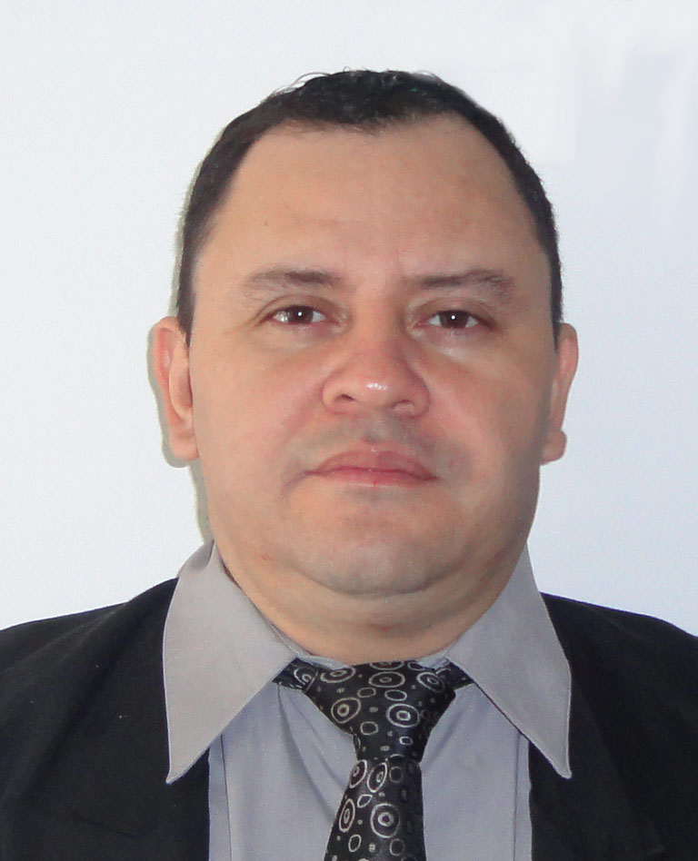

Hoja de Vida
Marco Valle
Tegucigalpa M.D.C, Honduras
14 de Marzo de 1975
Información Personal
Perfil
Soy Ingeniero en sistemas, con un master en educación virtual, docente de la carrera de Informática Educativa de la Universidad Pedagogica Francisco Morazan. Me considero una persona proactiva y creativa, apasionado de la tecnología el diseño, la programación y todo lo relacionado con la construcción de contenidos digitales.
Idiomas
- Español: Lectura 100%, Escritura 100%, Hablar 100%
- Ingles: Lectura 50%, Escritura 30%, Hablar 20%